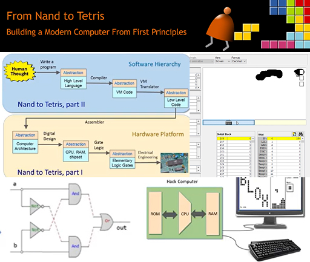

Projects
OV7670 Powered Camera And Web Interface

I created a custom PCB using KiCad to interface with an OV7670 CMOS camera sensor module and an RP2040 Raspberry Pi Pico. I developed firmware in C for the Pico to capture image data, working with time-sensitive communication and limited memory. Image data is streamed via serial to a Flask server in Python, which serves it to a JavaScript-powered web interface rendering on an HTML Canvas. This project is a blend of embedded electronics, serial communication, firmware development, and full-stack development.
- RP2040 Pi Pico
- C
- CMake
- HTML
- JavaScript
- HTML Canvas
- KiCad
- PCB Design
- Python
- Serial Communication
- Full-Stack Development
RESTful Cryptography and Authentication API

In this university assignment, I created a series of API endpoints to manage user authentication and authorisation, API keys, Encrytion, Hashing, and more. The API is implemented in C# in ASP.NET Web API, with Entity Framework being used to implement the database. The API implements user creation and role based authorisation, SHA1 and SHA256 hashing and signing, AES and RSA encryption, and more. A C# console client uses the remote API to implement its services locally.
- C#
- ASP.NET Web API
- Entity Framework
- SHA1 & SHA256 Hashing and Signing
- RSA and AES Encryption
- Backend Development
- Client-Server Architecture
AI Image Fitter

This web application demonstrates how a neural network can memorise an image by overfitting. Using TensorFlow.js and JavaScript, I train a model live in the browser on an image, approximating its RGBA values as a four-dimensional function. As the model learns, the output updates in real time on an HTML Canvas, providing immediate visual feedback. It is a visually interesting example of front-end machine learning in the browser.
- Machine Learning
- TensorflowJS
- HTML Canvas
- JavaScript
- Web Development
- Image Processing
- Real-Time Visualization
Root Runner - Game Jam

Root Runner is cute little Game Jam entry in which you play as a flower racing against a clock to solve square root problems. The game was created in Unity using C#, with sprites designed in Krita and animated using Unity’s rigged skeletal animator. The project was exported to WebGL, allowing it to run directly in the browser without installation.
- Unity
- C#
- Sprite Sheets
- 2D Skeletal Animation
- Graphic Design
- UX for Games
- Rapid Prototyping
Prototype Medical Volume Segmentation Tool

For a university project I built a zero-footprint, browser-based tool for 3D medical image annotation. Users can load volumetric image data, view planar slices along different axes, and mark regions of interest using an intuitive, layer-based annotation interface. Rendering done with HTML Canvas, and user interactions are handled with JavaScript. I also conducted a usability study to evaluate how intuitive and effective the interface was, ensuring a user-centred design.
- HTML
- JavaScript
- CSS
- HTML Canvas
- Project Management
- Data Visualization
- Usability Testing
- Git
Triple MNIST CNN

This project explores the triple-MNIST dataset, where the task is to recognise images containing three digits. I trained and fine-tuned convolutional neural networks using TensorFlow to achieve high accuracy and experimented with generative modelling by building a conditional deep-convolutional GAN (cdcGAN) in PyTorch to synthesise new images. The project required proficiency in data preprocessing, deep learning architectures, fine-tuning, and regularisation.
- Google Colab
- Deep Learning
- GAN
- CNN
- Tensorflow
- PyTorch
- Regularisation
- Data Preprocessing
- Hyperparameter Tuning
- Model Evaluation
GPU And CPU Parallel Boid Simulations

I implemented a flocking simulation using two approaches: a multithreaded Rust program for CPU parallelism and a GPU version in CUDA/C++. The Rust implementation scales across CPU cores using multithreading, while the CUDA version is optimised with shared memory and memory tiling to accelerate performance on the GPU.
- OpenGL
- CUDA
- C++
- Rust
- Multithreading
- GPU Programming
- Shared Memory
- Memory Tiling
- Locks
- Performance Optimisation
- Simulation
Minimax 4-in-a-row Bot

This is a little 4-in-a-row game in JavaScript where you play on a variable-sized board against a bot. The bot uses the MiniMax algorithm to determine the optimal move.
- HTML
- JavaScript
- CSS
- MiniMax
Nand2Tetris

Nand2Tetris is a 12-project online course in computer architecture, compilers, and systems design. You begin by piecing together logic gates to create chips in a hardware description language , then combining increasingly complex chips to construct a 16-bit computer. From there, you create an assembler, and a two-stage compiler for a C-like language called 'Jack', both of which I implemented in C#. For the final project, I wrote and compiled a drawing application to run on the computer. It's a great course for deepening understanding and developing abstraction and system design skills.
- C#
- Compilers and Assemblers
- Computer Architecture
- VHDL
- C-like language
- Assembly
This Website!

This site is made in plain HTML, CSS, and a touch of JavaScript. I wanted a little portfolio of some of my favourite projects. I created rough layouts and thumbnails in Figma, then got to work coding the site, and hosted it on GitHub Pages for free!
- HTML
- JavaScript
- CSS
- Figma
- GitHub Pages
- Responsive Web Design
- DNS